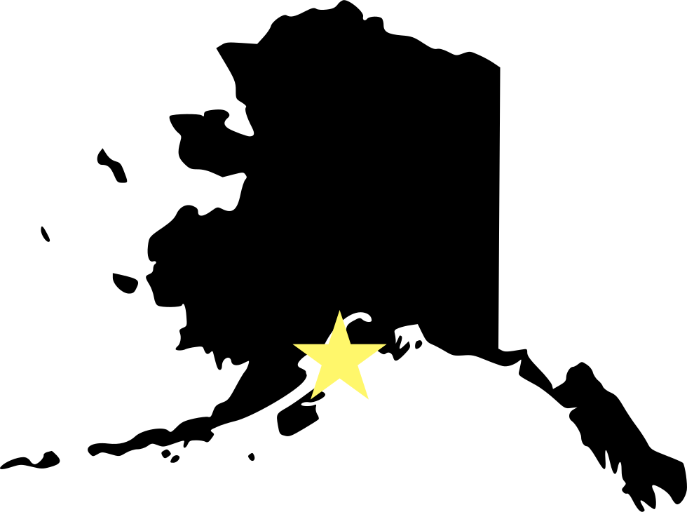
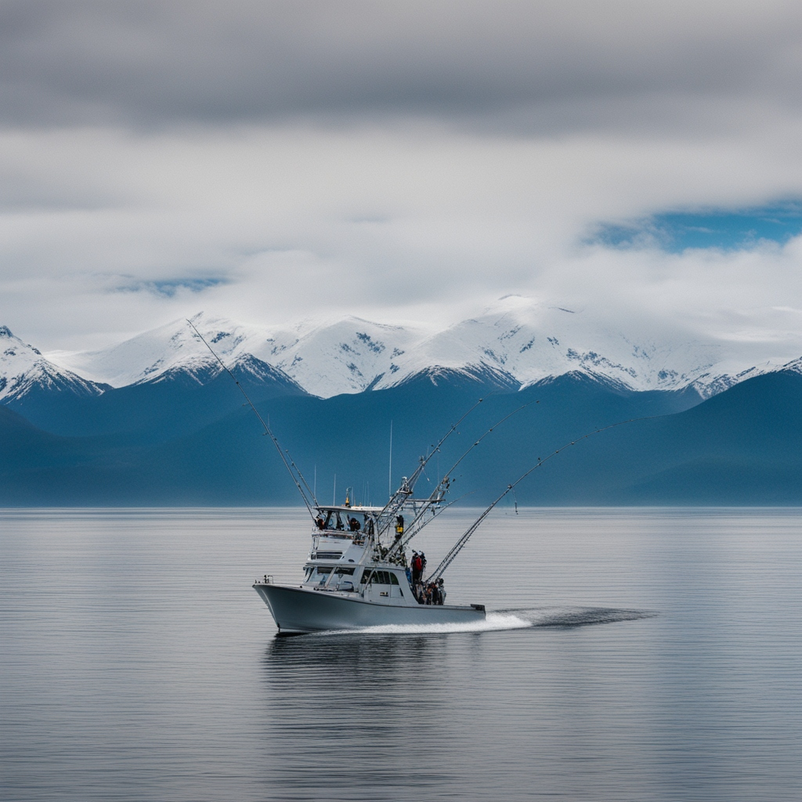
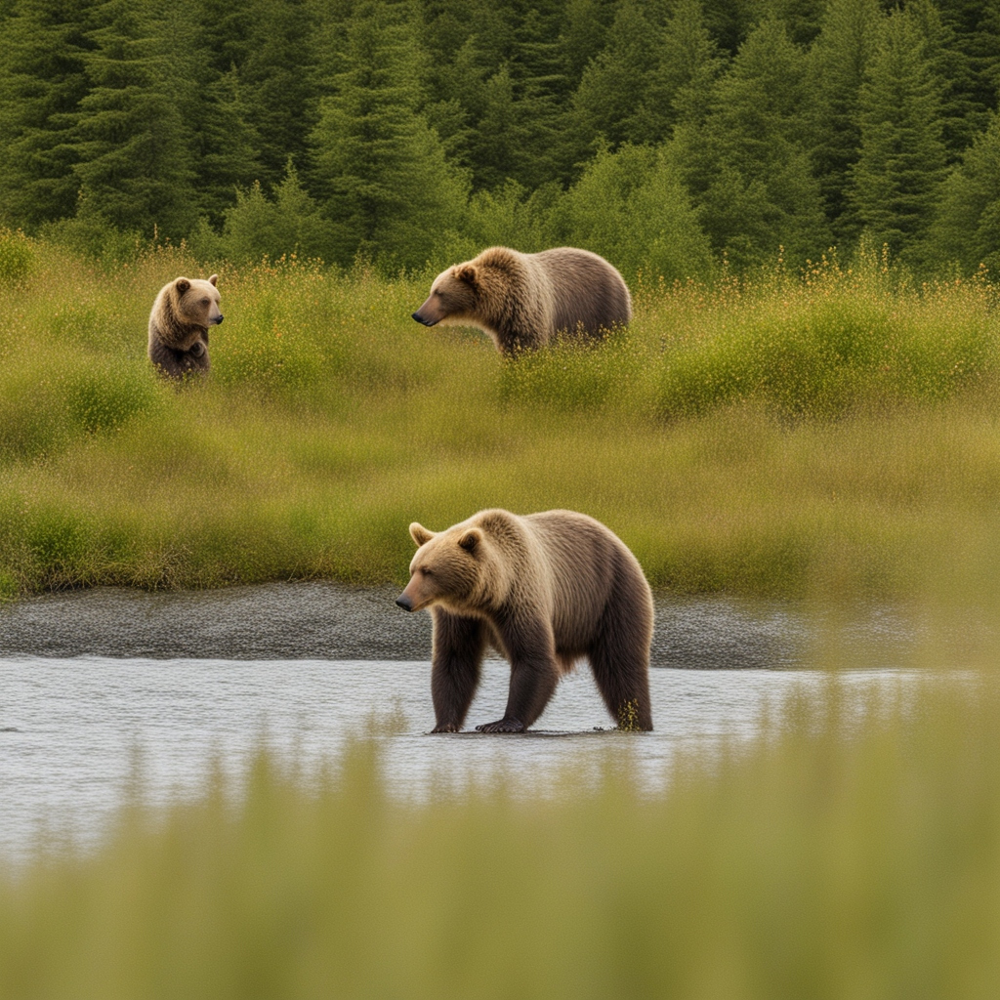

Homer
The halibut capital of the world
Homer Information
- Incorporation: 1964
- Classification: Rural
- Region: South Central
- Median Household Income: $69,757
- Alaska Median Household Income: $88,121
Homer Attractions

Halibut Fishing

Bear Viewing
Kayaking
*** Population and income information pulled from the U.S. Census Bureau.
Weather information pulled from the NOAA National Centers for Environmental Information.
Incorporation dates pulled from Wikiwand.
Images were created using Deep AI's generative image technology. ***